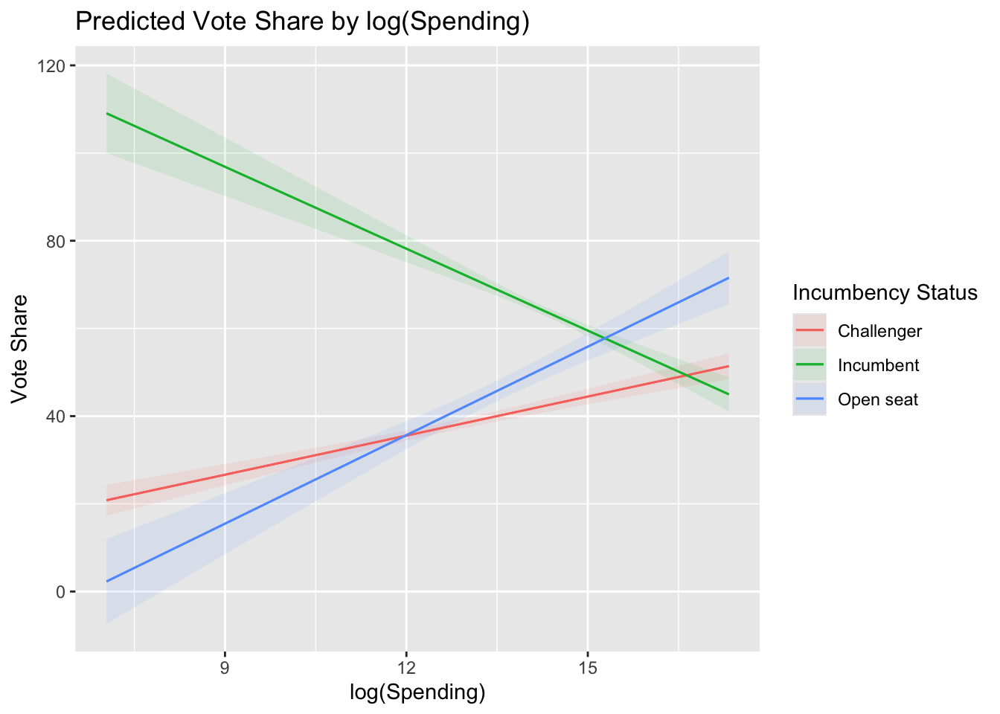

Section 10. Interactions and Marginal Effects
Interaction Effects
Last time, we worked through dummy variables which allow us to fit lines with different intercepts for different groups. For example, the relationship between campaign spending and vote share has the same slope for incumbents, challengers, and open-seat candidates; however, by adding dummy variables for incumbents and open-seat candidates, we allow incumbents and open-seat candidates to start with higher vote shares, on average, than challengers.
However, sometimes we want there to be different slopes for different groups. We might think that challengers get more benefits from campaign spending because they are relatively unknown to the public: campaign spending, therefore, should help them get their names out to the public. On the other hand, incumbents are relatively better known than challengers, so the slope of campaign spending in a regression of vote share on campaign spending should be smaller for incumbents than challengers or open-seat candidates.
To estimate separate slopes for different groups, we use what is known as an interaction term. In our example above, we would estimate a model like the following:
\[\begin{align*} voteshare_i = \beta_0 + \beta_1 * log(spending) + \beta_2*incumbent + \beta_3 * openseat + \\ \beta_4 * incumbent*log(spending) + \beta_5 * openseat*log(spending) + \varepsilon \end{align*}\]
This allows the relationship between spending and voteshare to vary by incumbency status.
Estimating Interactions in R
The syntax for estimating interactions in R is fairly straightforward: we simply add a * sign between the variables we want to interact. We can do this in the context of our house data below.
inter_mod <- lm(voteshare~log(disbursements)*incumbent_challenge_full,
data = house)stargazer(inter_mod,
type = "html",
covariate.labels = c("log(Spending)",
"Incumbent",
"Open Seat",
"log(Spending)*Incumbent",
"log(Spending)*Open Seat",
"Intercept"),
omit.stat = c("ser", "f"))| Dependent variable: | |
| voteshare | |
| log(Spending) | 2.970*** |
| (0.301) | |
| Incumbent | 152.994*** |
| (9.860) | |
| Open Seat | -44.994*** |
| (10.810) | |
| log(Spending)*Incumbent | -9.197*** |
| (0.700) | |
| log(Spending)*Open Seat | 3.759*** |
| (0.800) | |
| Intercept | -0.091 |
| (3.866) | |
| Observations | 726 |
| R2 | 0.662 |
| Adjusted R2 | 0.660 |
| Note: | p<0.1; p<0.05; p<0.01 |
1. What is the association between campaign spending and vote share for Challengers?
1. What is the association between campaign spending and vote share for Challengers?
\[\begin{align*} voteshare_i = \beta_0 + \beta_1 * log(spending) + \beta_2 * Incumbent + \\ \beta_3 * Open Seat + \beta_4 * log(spending)*Incumbent + \\ \beta_5*log(spending)*OpenSeat + \varepsilon \end{align*}\]
Plugging in values of 0 for incumbents and open-seat candidates, we get:
\[\begin{align*} voteshare_i = \beta_0 + \beta_1 * log(spending) + \beta_2 * 0 + \\ \beta_3 * 0 + \beta_4 * log(spending)*0 + \\ \beta_5*log(spending)*0 + \varepsilon\\ = \beta_0 + \beta_1*log(spending) + \varepsilon \end{align*}\]
Therefore, \(\beta_1\), the slope of log(Spending), can be interpreted as the association between campaign spending and vote share for challenger candidates. Among challengers, for every one unit increase in spending on the log scale, we would expect vote share to increase by about 3 percentage points, on average.
2. What is the association between campaign spending and vote share for Incumbents?
2. What is the association between campaign spending and vote share for Incumbents?
\[\begin{align*} voteshare_i = \beta_0 + \beta_1 * log(spending) + \beta_2 * Incumbent + \\ \beta_3 * Open Seat + \beta_4 * log(spending)*Incumbent + \\ \beta_5*log(spending)*OpenSeat + \varepsilon \end{align*}\]
Plugging in a value of 0 for open-seat candidates and 1 for incumbent candidates, we get:
\[\begin{align*} voteshare_i = \beta_0 + \beta_1 * log(spending) + \beta_2 * 1 + \\ \beta_3 * 0 + \beta_4 * log(spending)*1 + \\ \beta_5*log(spending)*0 + \varepsilon\\ = \beta_0 + \beta_1*log(spending) + \beta_2 + \beta_4*log(spending) + \varepsilon \end{align*}\]
Therefore, \(\beta_1 + \beta_4\), the slopes of log(Spending), can be interpreted as the association between campaign spending and vote share for incumbent candidates. Among incumbent candidates, for every one unit increase in spending on the log scale, we would expect vote share to decrease by about 6.23 percentage points, on average.
3. What is the association between campaign spending and vote share for Open-Seat Candidates?
3. What is the association between campaign spending and vote share for Open-Seat Candidates?
\[\begin{align*} voteshare_i = \beta_0 + \beta_1 * log(spending) + \beta_2 * Incumbent + \\ \beta_3 * Open Seat + \beta_4 * log(spending)*Incumbent + \\ \beta_5*log(spending)*OpenSeat + \varepsilon \end{align*}\]
Plugging in a value of 0 for incumbent candidates and 1 for open-seat candidates, we get:
\[\begin{align*} voteshare_i = \beta_0 + \beta_1 * log(spending) + \beta_2 * 0 + \\ \beta_3 * 1 + \beta_4 * log(spending)*1 + \\ \beta_5*log(spending)*1 + \varepsilon \\ = \beta_0 + \beta_1*log(spending) + \beta_3 + \beta_5*log(spending)+ \varepsilon \end{align*}\]
Therefore, \(\beta_1 + \beta_5\), the slopes of log(Spending), can be interpreted as the association between campaign spending and vote share for open-seat candidates. Among incumbent candidates, for every one unit increase in spending on the log scale, we would expect vote share to increase by about 6.73 percentage points, on average.
In sum, from the results above, it seems that the relationship between campaign spending and vote share is negative among incumbents and positive for challengers and open-seat candidates. This shows us how interactions can have important implications for our conclusions.
Visualizing Interactions in R
First, we can utilize a simple scatterplot, adding in color, to visualize the relationships among our variables. We can see that, among the challenger and open-seat candidate points, shown in red and blue below. Among incumbents (shown in green), however, it appears, consistent with our regression results above, that the relationship between spending and vote share is negative.
house %>%
ggplot(aes(log(disbursements), voteshare,
color = incumbent_challenge_full)) +
geom_point() +
labs(x = "log(Spending)", y = "Vote Share",
title = "Relationship between Spending and Vote Share (2020 House Elections)") +
guides(color = guide_legend(title = "Incumbency Status")) +
theme_bw()We can also add regression lines to display the results of our regression from above. We can use the geom geom_abline() from ggplot2 to manually add our regression lines; however, this can be a bit tedious.
house %>%
ggplot(aes(log(disbursements), voteshare,
color = incumbent_challenge_full)) +
geom_point() +
geom_abline(intercept = coef(inter_mod)[1],
slope = coef(inter_mod)[2],
color = "red") +
geom_abline(intercept = coef(inter_mod)[1] + coef(inter_mod)[3],
slope = coef(inter_mod)[2]+coef(inter_mod)[5],
color = "green") +
geom_abline(intercept = coef(inter_mod)[1] + coef(inter_mod)[4],
slope = coef(inter_mod)[2] + coef(inter_mod)[6],
color = "blue") +
#set the labels of the axes and the title
labs(x = "log(Spending)", y = "Vote Share",
title = "Relationship between Spending and Vote Share (2020 House Elections)") +
# change the legend title to be more meaningful
guides(color = guide_legend(title = "Incumbency Status")) +
# give the plot a black-and-white theme
theme_bw()Importantly, ggplot2 allows us to add these lines in an automated fashion using the geom_smooth() function. Because we are grouping and coloring our data by incumbency status, ggplot2 will automatically fit separate regression lines for each group.
house %>%
ggplot(aes(log(disbursements), voteshare,
color = incumbent_challenge_full)) +
geom_point() +
# adds linear regression lines, colored and grouped by incumbency
geom_smooth(method = "lm")+
#update axis titles and plot title
labs(x = "log(Spending)", y = "Vote Share",
title = "Relationship between Spending and Vote Share (2020 House Elections)") +
#update legend title
guides(color = guide_legend(title = "Incumbency Status")) +
#change the theme to black and white
theme_bw()Marginal Effects
There are a variety of packages which can show the “effects” of different variables in our regression for different subgroups in our data. Some examples of these packages are emmeans and marginaleffects. This is incredibly helpful when we are running models with interactions.
install.packages("emmeans")
library(emmeans)
house <- house %>%
mutate(lndisbursements = log(disbursements))
inter_mod <- lm(voteshare~lndisbursements*incumbent_challenge_full,
data = house)Extracting Slopes from Regression Models
First, we are usually interested in the slope of our variable of interest among different groups. This is known as the grouped “marginal effect” of our variable of interest.
We can calculate these slopes using the emtrends() function.
emtrends(inter_mod,
#tells function what grouping variable we want
"incumbent_challenge_full",
# tells function what slope we are interested in
var = "lndisbursements") incumbent_challenge_full lndisbursements.trend SE df lower.CL upper.CL
Challenger 2.97 0.301 720 2.38 3.56
Incumbent -6.23 0.632 720 -7.47 -4.99
Open seat 6.73 0.741 720 5.27 8.18
Confidence level used: 0.95 Importantly, we can plot these slopes using ggplot2.
emtrends(inter_mod,
"incumbent_challenge_full",
var = "lndisbursements") %>%as_tibble()%>%
ggplot(aes(incumbent_challenge_full, lndisbursements.trend)) +
# add dots corresponding to slope estimates
geom_point() +
# add whiskers to the dot and whisker plot, corresponding to 95% Confidence Intervals around slope estimates
geom_errorbar(aes(x = incumbent_challenge_full,
ymin = lower.CL, ymax = upper.CL),
width = 0) +
# add a horizontal line to display statistical significance
geom_hline(yintercept = 0, color = "red", lty = "dashed") +
# change the axis labels
labs(x = "", y = "log(Spending) Slope")Extracting Predictions from Regression Models
We can use the emmeans package to calculate and display predictions from our model for various values of each of our variables.
First, the emmeans() function takes our regression fit and calculates the predictions from our model (as well as confidence intervals).
emmeans(inter_mod, ~lndisbursements*incumbent_challenge_full) lndisbursements incumbent_challenge_full emmean SE df lower.CL upper.CL
13.6 Challenger 40.2 0.634 720 39.0 41.4
13.6 Incumbent 68.4 0.715 720 67.0 69.9
13.6 Open seat 46.2 1.206 720 43.8 48.6
Confidence level used: 0.95 We can also customize the values at which the predictions are calculated using the at argument:
emmeans(inter_mod,~lndisbursements*incumbent_challenge_full,
at = list(lndisbursements =
c(min(house$lndisbursements),
max(house$lndisbursements)))) lndisbursements incumbent_challenge_full emmean SE df lower.CL upper.CL
7.04 Challenger 20.82 1.80 720 17.30 24.3
17.33 Challenger 51.39 1.52 720 48.42 54.4
7.04 Incumbent 109.06 4.63 720 99.97 118.2
17.33 Incumbent 44.97 1.98 720 41.09 48.9
7.04 Open seat 2.29 4.95 720 -7.43 12.0
17.33 Open seat 71.55 3.07 720 65.53 77.6
Confidence level used: 0.95 Plotting Predictions from Regression Models
Finally, we can plot the predictions from our regression model using the emmip() function. We can use the emmip() function to plot the results of the emmeans() function:
emmeans(inter_mod, ~lndisbursements*incumbent_challenge_full,
at = list(lndisbursements = c(min(house$lndisbursements),
max(house$lndisbursements))))%>%
emmip(
# displays predictions for lndisbursements, faceting by incumbent_challenge_full
~lndisbursements|incumbent_challenge_full,
# adds prediction intervals
PIs = T
)install.packages("marginaleffects")
library(marginaleffects)
house <- house %>%
mutate(lndisbursements = log(disbursements))
inter_mod <- lm(voteshare~lndisbursements*incumbent_challenge_full,
data = house)Extracting Slopes from our Regression Models
Like we did above, we often want to know the slope(s) of our variable(s) of interest at different levels of our interaction variables. For example, what is the slope of campaign spending among incumbents? What about among challengers? How about among open-seat candidates?
The marginaleffects package allows us to extract these slopes from our lm model object. The avg_slopes() function calculates the slope of the variable specified with the variables argument for each group/category in the by argument.
avg_slopes(inter_mod,
variables = "lndisbursements",
by = "incumbent_challenge_full")
Term Contrast incumbent_challenge_full Estimate Std. Error z
lndisbursements mean(dY/dX) Challenger 2.97 0.301 9.85
lndisbursements mean(dY/dX) Incumbent -6.23 0.632 -9.85
lndisbursements mean(dY/dX) Open seat 6.73 0.741 9.08
Pr(>|z|) S 2.5 % 97.5 %
<0.001 73.7 2.38 3.56
<0.001 73.6 -7.47 -4.99
<0.001 63.0 5.28 8.18
Columns: term, contrast, incumbent_challenge_full, estimate, std.error, statistic, p.value, s.value, conf.low, conf.high, predicted_lo, predicted_hi, predicted
Type: response The plot_slopes() function takes the same arguments as the avg_slopes() function but plots the slopes for each subgroup in a ggplot2 format.
plot_slopes(inter_mod,
variables = "lndisbursements",
by = "incumbent_challenge_full") +
geom_hline(yintercept = 0, color = "red", lty = "dashed") +
theme_bw()+
labs(x = "",
title = "Marginal Effects of log(Spending) on Vote Share") Extracting Predictions from Regression Models
To get the average prediction from our model at a given value of the incumbent, we can use the predictions() function, passing our model object as well as the variable we want to group by as the by argument.
predictions(inter_mod,
by = "incumbent_challenge_full")
incumbent_challenge_full Estimate Std. Error z Pr(>|z|) S 2.5 % 97.5 %
Open seat 45.9 1.206 38.1 <0.001 Inf 43.5 48.3
Incumbent 63.7 0.531 119.9 <0.001 Inf 62.7 64.8
Challenger 37.6 0.576 65.2 <0.001 Inf 36.5 38.7
Columns: incumbent_challenge_full, estimate, std.error, statistic, p.value, s.value, conf.low, conf.high
Type: response We can also plot the predicted values from our model using the plot_predictions() function.
plot_predictions(inter_mod,
condition = c("lndisbursements",
"incumbent_challenge_full")) +
labs(x = "log(Spending)", y = "Vote Share",
title = "Predicted Vote Share by log(Spending)") +
guides(color = guide_legend(title = "Incumbency Status"),
fill = guide_legend(title = "Incumbency Status"))